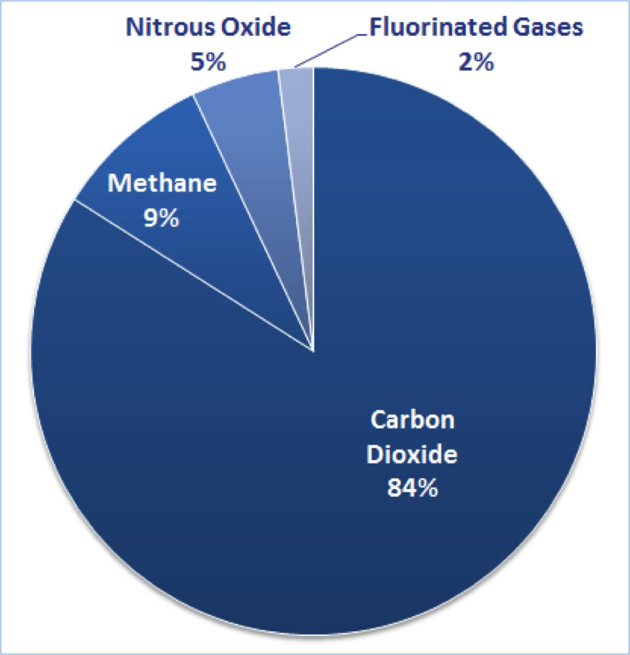
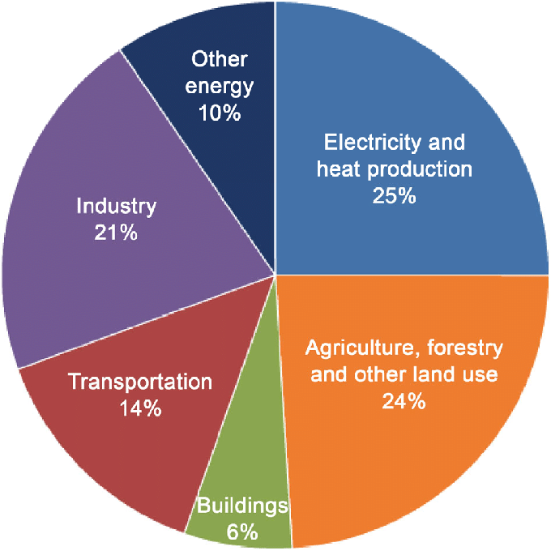

Greenhouse Gas
(GHG) Emissions
Gases that trap heat in the atmosphere are called greenhouse gases. This section provides information on emissions and removals of the main greenhouse gases to and from the atmosphere.
The primary greenhouse gases in the United States are:
Carbon dioxide (CO2)
Carbon dioxide enters the atmosphere through burning fossil fuels (coal, natural gas, and oil), solid waste, trees and wood products, and also as a result of certain chemical reactions (e.g., manufacture of cement). Carbon dioxide is removed from the atmosphere (or "sequestered") when it is absorbed by plants as part of the biological carbon cycle.
Methane (CH4)
Methane is emitted during the production and transport of coal, natural gas, and oil. Methane emissions also result from livestock and other agricultural practices and by the decay of organic waste in municipal solid waste landfills.
Nitrous oxide (N2O)
Nitrous oxide is emitted during agricultural and industrial activities, as well as during combustion of fossil fuels and solid waste.
Fluorinated gases
Hydrofluorocarbons, perfluorocarbons, sulfur hexafluoride, and nitrogen trifluoride are synthetic, powerful greenhouse gases that are emitted from a variety of industrial processes. Fluorinated gases are sometimes used as substitutes for stratospheric ozone-depleting substances (e.g., chlorofluorocarbons, hydrochlorofluorocarbons, and halons). These gases are typically emitted in smaller quantities, but because they are potent greenhouse gases, they are sometimes referred to as High Global Warming Potential gases ("High GWP gases").

source:https://cla.auburn.edu/ces/climate/global-gas-emissions/
Each gas's effect on climate change depends on three main
factors:
1. How much of these gases are in the atmosphere?
Concentration, or abundance, is the amount of a particular gas in the air. Larger emissions of greenhouse gases lead to higher concentrations in the atmosphere. Greenhouse gas concentrations are measured in parts per million, parts per billion, and even parts per trillion. One part per million is equivalent to one drop of water diluted into about 13 gallons of liquid (roughly the fuel tank of a compact car). To learn more about the increasing concentrations of greenhouse gases in the atmosphere, visit the Causes of Climate Change and the Climate Change Indicators: Atmospheric Concentrations of Greenhouse Gases pages.
2. How long do they stay in the atmosphere?
Each of these gases can remain in the atmosphere for different amounts of time, ranging from a few years to thousands of years. All of these gases remain in the atmosphere long enough to become well mixed, meaning that the amount that is measured in the atmosphere is roughly the same all over the world, regardless of the source of the emissions.
3. How strongly do they impact global temperatures?
Some gases are more effective than others at making the planet warmer and "thickening the Earth's blanket."
For each greenhouse gas, a Global Warming Potential (GWP) has been calculated to reflect how long it remains in the atmosphere, on average, and how strongly it absorbs energy. Gases with a higher GWP absorb more energy, per pound, than gases with a lower GWP, and thus contribute more to warming Earth.
Sources of Greenhouse Gas Emissions
Greenhouse gases trap heat and make the planet warmer. Human activities are responsible for almost all of the increase in greenhouse gases in the atmosphere over the last 150 years.1 The largest source of greenhouse gas emissions from human activities in the United States is from burning fossil fuels for electricity, heat, and transportation.
EPA tracks total U.S. emissions by publishing the Inventory of U.S. Greenhouse Gas Emissions and Sinks. This annual report estimates the total national greenhouse gas emissions and removals associated with human activities across the United States.

source:Holmberg, Kenneth & Erdemir, Ali. (2017). Influence of tribology on global energy consumption, costs and emissions.
The primary sources of greenhouse gas emissions in the United States are:
Electricity production
(30 percent of 2014 greenhouse gas emissions) – Electricity production generates the largest share of greenhouse gas emissions. Approximately 67 percent of our electricity comes from burning fossil fuels, mostly coal and natural gas.
Transportation
(26 percent of 2014 greenhouse gas emissions) – Greenhouse gas emissions from transportation primarily come from burning fossil fuel for our cars, trucks, ships, trains, and planes. Over 90 percent of the fuel used for transportation is petroleum based, which includes gasoline and diesel.
Industry
(21 percent of 2014 greenhouse gas emissions) – Greenhouse gas emissions from industry primarily come from burning fossil fuels for energy, as well as greenhouse gas emissions from certain chemical reactions necessary to produce goods from raw materials.
Commercial and Residential
(12 percent of 2014 greenhouse gas emissions) – Greenhouse gas emissions from businesses and Newss arise primarily from fossil fuels burned for heat, the use of certain products that contain greenhouse gases, and the handling of waste.
Agriculture
(9 percent of 2014 greenhouse gas emissions) – Greenhouse gas emissions from agriculture come from livestock such as cows, agricultural soils, and rice production.
Land Use and Forestry
(offset of 11 percent of 2014 greenhouse gas emissions) – Land areas can act as a sink (absorbing CO2 from the atmosphere) or a source of greenhouse gas emissions. In the United States, since 1990, managed forests and other lands have absorbed more CO2 from the atmosphere than they emit.
Emissions and Trends
Since 1990, U.S. greenhouse gas emissions have increased by about 7 percent. From year to year, emissions can rise and fall due to changes in the economy, the price of fuel, and other factors. In 2014, U.S. greenhouse gas emissions increased compared to 2013 levels. This increase was due to a number of factors, including: cold winter conditions resulting in an increase in fuel demand, especially in residential and commercial sectors; an increase in transportation emissions resulting from an increase in vehicle miles traveled; and an increase in industrial production across multiple sectors that also resulted in increases in industrial sector emissions.
This article first appeared on https://19january2017snapshot.epa.gov/ghgemissions/sources-greenhouse-gas-emissions_.html